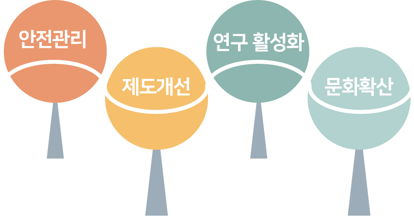

'수상안전 사고 예방을 위해 우리는 함께합니다'
대한수상안전협회는 끊임없이 발생하고 있는 국내 수상 사고의 예방과 사고 시 대응 방안을 연구, 발표하고 이를 알리기 위해 국내 유수의 전문가들이 함께하고 있습니다.
이를 넘어 전 세계 수상 안전 협회와의 소통을 통해 수상 안전사고로부터 생명을 보호하고 지킬 수 있도록 최선을 다하고 있습니다.
협회는 특정 자격을 앞세우기보다 수상안전 현장에서 일하는 지도자·구조 인력의 권익 보호와 안전한 활동 환경을 만드는 데 힘씁니다. 협회가 운영하는 자격과 함께, 다른 기관에서 취득한 수상안전 자격도 동등하게 존중하고 인정합니다.
주요 사업
수영시설을 안전하게 관리하는 기반 구축
- 이동형, 조립형 수영장 등 안전점검
- 수영시설 정보관리 및 인증 프로세스 구축 등
이동형 생존수영 및 수영시설 법과 제도개선
- 이동형, 조립형 수영장 등 수영시설 안전인증 시범사업 추진
- 수영시설 등 안전관리 법령 개정안 수립 등
수상안전에 대한 교육과 연구 활성화
- 수상안전 관련 교육 전문성 강화 및 교재 개발
- 수상 안전 수칙 표준 가이드 개발 등
수상안전 문화 확산
- 수상안전 및 수영시설 등 운영자와 이용자에게 안전문화 전파
- SNS를 활용한 대국민 수상안전 문화 확산
